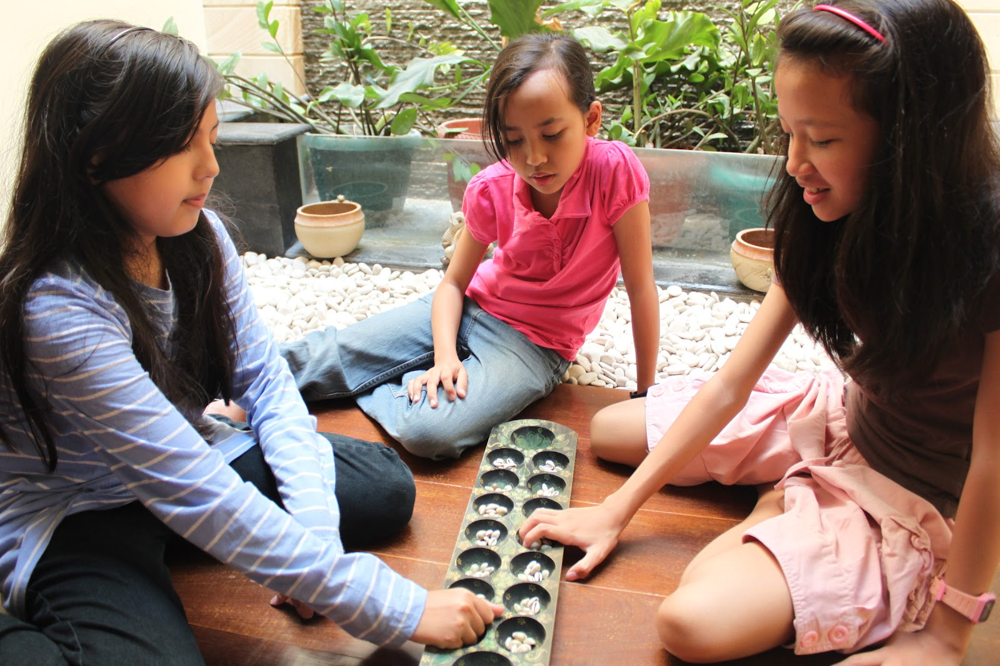
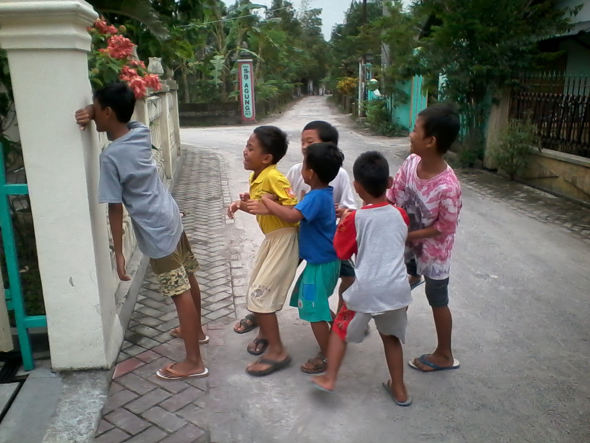
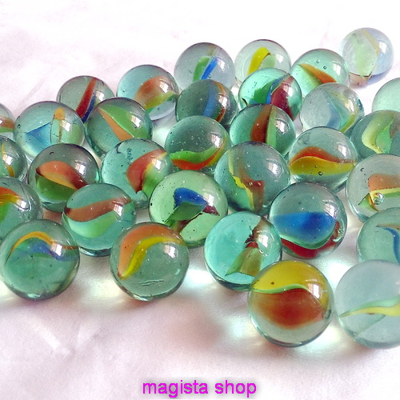
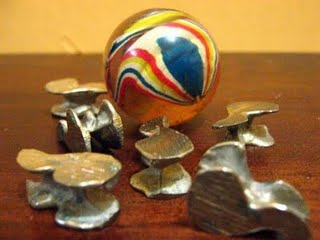

Main apa ya hari ini? Mainan jaman dulu juga asyik kok. Selain bercengkrama dengan teman, main di luar
ruangan juga buat sehat lho.

Congklak
Congklak adalah suatu permainan tradisional yang dikenal dengan berbagai macam nama di seluruh
Indonesia. Biasanya dalam permainan, sejenis cangkang kerang digunakan sebagai biji congklak dan jika
tidak ada, kadangkala digunakan juga biji-bijian dari tumbuh-tumbuhan.
Cara Bermain:
Permainan congklak dilakukan oleh dua orang. Dalam permainan mereka menggunakan papan yang dinamakan
papan congklak dan 98 (14 x 7) buah biji yang dinamakan biji congklak atau buah congklak. Umumnya
papan congklak terbuat dari kayu dan plastik, sedangkan bijinya terbuat dari cangkang kerang,
biji-bijian, batu-batuan, kelereng atau plastik. Pada papan congklak terdapat 16 buah lobang yang
terdiri atas 14 lobang kecil yang saling berhadapan dan 2 lobang besar di kedua sisinya. Setiap 7
lobang kecil di sisi pemain dan lobang besar di sisi kananya dianggap sebagai milik sang pemain.
Pada awal permainan setiap lobang kecil diisi dengan tujuh buah biji. Dua orang pemain yang
berhadapan, salah seorang yang memulai dapat memilih lobang yang akan diambil dan meletakkan satu
ke lobang di sebelah kanannya dan seterusnya. Bila biji habis di lobang kecil yang berisi biji
lainnya, ia dapat mengambil biji-biji tersebut dan melanjutkan mengisi, bila habis di lobang besar
miliknya maka ia dapat melanjutkan dengan memilih lobang kecil di sisinya. Bila habis di lubang kecil
di sisinya maka ia berhenti dan mengambil seluruh biji di sisi yang berhadapan. Tetapi bila berhenti
di lobang kosong di sisi lawan maka ia berhenti dan tidak mendapatkan apa-apa.
Permainan dianggap selesai bila sudah tidak ada biji lagi yang dapat dimabil (seluruh biji ada di
lobang besar kedua pemain). Pemenangnya adalah yang mendapatkan biji terbanyak.

Petak Umpet
Petak umpet adalah sejenis permainan yang bisa dimainkan oleh minimal 2 orang, namun jika semakin
banyak akan semakin seru.
Cara Bermain:
Dimulai dengan Hompimpa untuk menentukan siapa yang menjadi "kucing" (berperan sebagai pencari teman-temannya
yang bersembunyi). Si kucing ini nantinya akan memejamkan mata atau berbalik sambil berhitung sampai 10,
biasanya dia menghadap tembok, pohon atau apasaja supaya dia tidak melihat teman-temannya bergerak untuk
bersembunyi (tempat jaga ini memiliki sebutan yang berbeda di setiap daerah, contohnya di beberapa daerah
di Jakarta ada yang menyebutnya INGLO, di daerah lain menyebutnya BON dan ada juga yang menamai tempat
itu HONG. Setelah hitungan sepuluh (atau hitungan yang telah disepakati bersama, misalnya jika wilayahnya
terbuka, hitungan biasanya ditambah menjadi 15 atau 20) dan setelah teman-temannya bersembunyi, mulailah
si "kucing" beraksi mencari teman-temannya tersebut.
Jika si "kucing" menemukan temannya, ia akan menyebut nama temannya sambil menyentuh INGLO atau BON atau
HONG, apabila hanya meneriakkan namanya saja, maka si "kucing" dianggap kalah dan mengulang permainan dari
awal. Apabila Yang seru adalah, pada saat si "kucing" bergerilya menemukan teman-temannya yang bersembunyi,
salah satu anak (yang statusnya masih sebagai "target operasi" atau belum ditemukan) dapat mengendap-endap
menuju INGLO, BON atau HONG, jika berhasil menyentuhnya, maka semua teman-teman yang sebelumnya telah
ditemukan oleh si "kucing" dibebaskan, alias sandera si "kucing" dianggap tidak pernah ditemukan, sehingga
si "kucing" harus kembali menghitung dan mengulang permainan dari awal.
Permainan selesai setelah semua teman ditemukan. Dan yang pertama ditemukanlah yang menjadi kucing berikutnya.

Kelereng
Kelereng dengan berbagai sinonim gundu, keneker, kelici, guli adalah bola kecil dibuat dari tanah liat,
marmer atau kaca untuk permainan anak-anak. Ukuran kelereng sangat bermacam-macam. Umumnya ½ inci (1.25 cm)
dari ujung ke ujung. Kelereng kadang-kadang dikoleksi, untuk tujuan nostalgia dan warnanya yang estetik.
Cara Bermain:
Bentuk permainan yang biasa dimainkan adalah main porces. Cara permainannya dengan menggambar segitiga
sama kaki ditanah kemudian masing-masing pemain meletakkan sebuah kelerengnya diatas gambaran segitiga
tersebut. Buah pasangan namanya, buah kelereng yang dipertaruhkan. Peserta, tergantung jumlah pemain.
Biasanya paling sedikit tiga pemain dan paling banyak idealnya enam pemain. Kalau lebih dari itu dibuat
dua kelompok. Permainan dimulai dengan cara masing-masing pemain menggunakan sebuah kelereng sebagai
gacoannya lalu melempar buah pasangan tersebut dari jarak dua atau tiga meter .Pemain secara bergantian
melempar sesuai urutan berdasarkan hasil undian dengan adu sut jari tangan Pelemparan gaco dilakukan
dengan membidik dan melempar keras dengan maksud mengenai buah pasangan atau agar hasil lemparan mendarat
di lapangan permainan terjauh.
Selanjutnya yang mengawali permainan adalah siapa yang berhasil mengenai buah pasangan, dialah
mendapat giliran pertama. Kalau tidak ada yang mengenai buah pasangan ,maka yang mulai bermain adalah
gacoannya yang terjauh. Pemain harus berusaha menghabiskan buah pasangan diporces pada saat giliran
bermain. Ada yang sekali giliran main sudah mampu menghabiskan semua buah pasangan. Tanda dia pemain
yang terampil. Berbagai taktik untuk menang dilakukan ,antara lain kalau tidak mau memburu gacoan lawan,
maka pilihannya adalah menembakkan gacoan ketempat yang kosong untuk disembunyikan agar tidak dapat
dimatikan oleh lawan-lawan main. Pemain yang mampu menghabiskan buah pasangan terakhir dilanjutkan
berburu menembak gacoan lawan. Pemain yang gacoannya kena tembak maka gacoannya mati, selesailah
permainannya pada game tersebut.
Ular Naga
Ular Naga adalah satu permainan berkelompok yang biasa dimainkan di luar rumah di waktu sore dan malam
hari. Tempat bermainnya di tanah lapang atau halaman rumah yang agak luas. Lebih menarik apabila dimainkan
di bawah cahaya rembulan. Pemainnya biasanya sekitar 5-10 orang, bisa juga lebih, anak-anak umur 5-12 tahun
(TK - SD).
Cara Bermain:
Anak-anak berbaris bergandeng pegang 'buntut', yakni anak yang berada di belakang berbaris sambil
memegang ujung baju atau pinggang anak yang di mukanya. Seorang anak yang lebih besar, atau paling
besar, bermain sebagai "induk" dan berada paling depan dalam barisan. Kemudian dua anak lagi yang
cukup besar bermain sebagai "gerbang", dengan berdiri berhadapan dan saling berpegangan tangan di
atas kepala. "Induk" dan "gerbang" biasanya dipilih dari anak-anak yang tangkas berbicara, karena
salah satu daya tarik permainan ini adalah dalam dialog yang mereka lakukan.
Barisan akan bergerak melingkar kian kemari, sebagai Ular Naga yang berjalan-jalan dan terutama
mengitari "gerbang" yang berdiri di tengah-tengah halaman, sambil menyanyikan lagu. Pada saat-saat
tertentu sesuai dengan lagu, Ular Naga akan berjalan melewati "gerbang". Pada saat terakhir, ketika
lagu habis, seorang anak yang berjalan paling belakang akan 'ditangkap' oleh "gerbang".
Setelah itu, si "induk" --dengan semua anggota barisan berderet di belakangnya-- akan berdialog
dan berbantah-bantahan dengan kedua "gerbang" perihal anak yang ditangkap. Seringkali perbantahan
ini berlangsung seru dan lucu, sehingga anak-anak ini saling tertawa. Sampai pada akhirnya, si anak
yang tertangkap disuruh memilih di antara dua pilihan, dan berdasarkan pilihannya, ditempatkan di
belakang salah satu "gerbang".
Permainan akan dimulai kembali. Dengan terdengarnya nyanyi, Ular Naga kembali bergerak dan
menerobos gerbang, dan lalu ada lagi seorang anak yang ditangkap. Perbantahan lagi. Demikian
berlangsung terus, hingga "induk" akan kehabisan anak dan permainan selesai. Atau, anak-anak bubar
dipanggil pulang orang tuanya karena sudah larut malam.

Bekel
Alat permainan adalah bola bekel, biji bekel (cangkang keong, tutup botol minuman ringan). Biji bekel yang
sesungguhnya adalah benda berbentuk miniatur becak dari jepang yang ditarik oleh manusia, terbuat dari kuningan,
timbel, atau plastik, mempunyai empat sisi berbeda.
Cara Bermain:
Pemain mengumpulkan sejumlah sejenis cangkang keong, tutup botol minuman ringan di lantai, dan bola di
tangan pemain. Melakukan pengambilan tanpa pengembalian biji bekel pada saat bola bekel dilempar, lalu
jatuh dan memantul, selanjutnya ditangkap.
Setelah bola bekel dilempar pemain mengambil satu biji bekel kemudian segera menangkap bola bekel
sebelum jatuh untuk kedua kalinya. Melakukan langkah ke-2.1.3 secara berulang, sampai biji bekel terambil
semua dari lantai. Melakukan langkah ke-2.1.4, bedanya, pada setiap lemparan dua biji bekel terambil,
setelah habis dilanjutkan dengan 3 biji bekel, 4 biji bekel, dst.
Menyamakan posisi biji bekel dengan merubah posisi biji bekel satu-persatu pada saat bola bekel dilempar,
lalu jatuh dan memantul selanjutnya ditangkap. Melakukan langkah ke-2.1.4 dan ke-2.1.5 sampai habis biji
bekel di lantai.
Permainan dilakukan dengan berpedoman pada aturan-aturan permainan yang saling mendukung, demikian juga
matematika, dioperasikan dengan algoritma-algoritma yang saling mendukung, serta tidak tumpang tindih.
Jika terdapat pelanggaran terhadap aturan permainan, maka pemain dikatakan “curangâ€/ tidak “fairâ€,
bagitu juga dalam operasi matematika, jika operasi tidak sesuai dengan algoritma matematika, maka operasinya
salah. Karena terdapat kesesuaian antara aturan-aturan permaian dan algoritma-algoritma matematika,
maka penelitian akan mengungkap konsep matematika dalam permainan tradisional bekel.